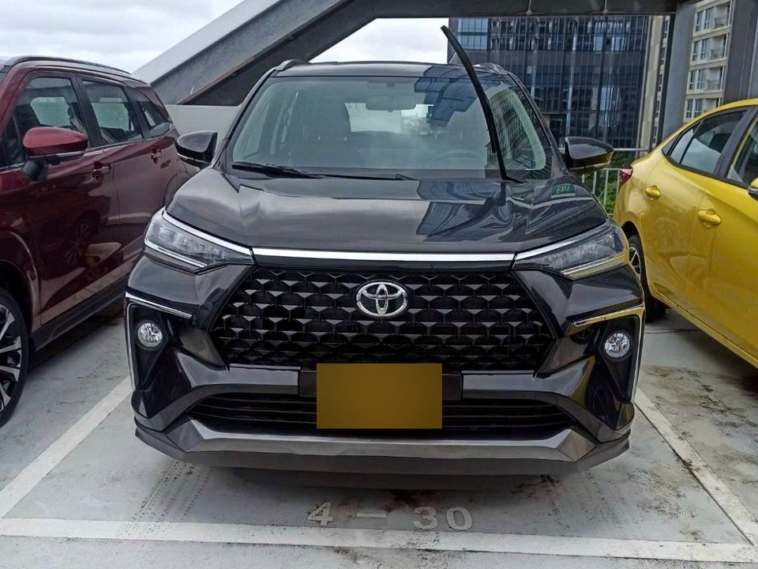
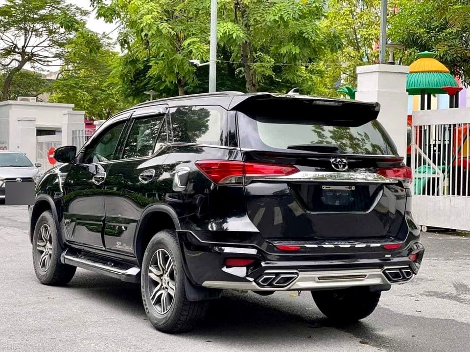
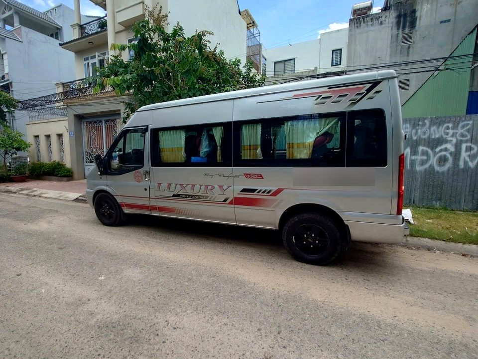
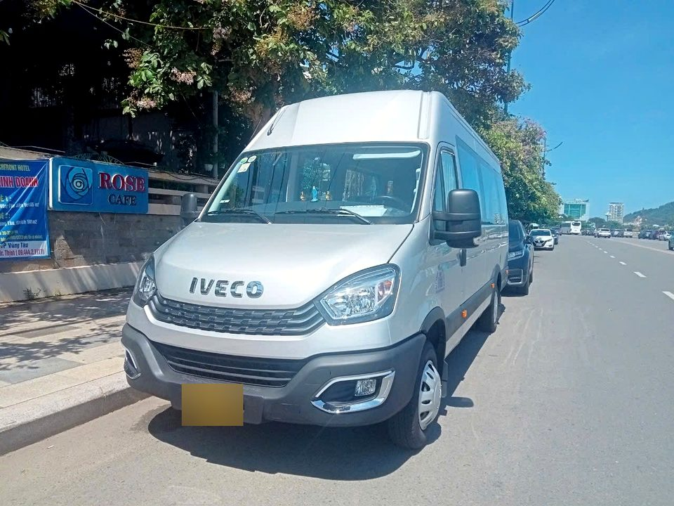

Choose Your Airport Transfer Vehicle
The Right Vehicle for Your Journey
Choose the vehicle category that best fits your group size, luggage and comfort needs.
Vehicle models may vary depending on availability. A similar or upgraded vehicle will be provided.
🚗 Sedan Car

Toyota Vios, …
1–2 passengers
A practical and comfortable choice for solo travellers and couples. Ideal for airport transfers with light to normal luggage.
🚙 7-Seater Comfort


Mitsubishi Xpander, Toyota Veloz, …
2–4 passengers
A spacious option for families and small groups, with extra room for passengers and luggage.
🚙 SUV

Toyota Fortuner, …
2–4 passengers
A comfortable and spacious choice for travellers who prefer an SUV, especially for longer journeys and private transfers.
🚐 Private Minibus


Hyundai Solati, Ford Transit, …
5–12 passengers
Ideal for families, friends and small groups travelling together. More space for both passengers and luggage.
🚐 Group Transfer

Iveco Daily, Large Minibus, …
10–16+ passengers
Designed for larger groups, cruise groups, corporate travellers and groups travelling with substantial luggage.
Not sure which vehicle is right for you?
Simply tell us your number of passengers and luggage, and our team will recommend the most suitable option.
Comfortable journey. Suitable vehicle. Professional service.